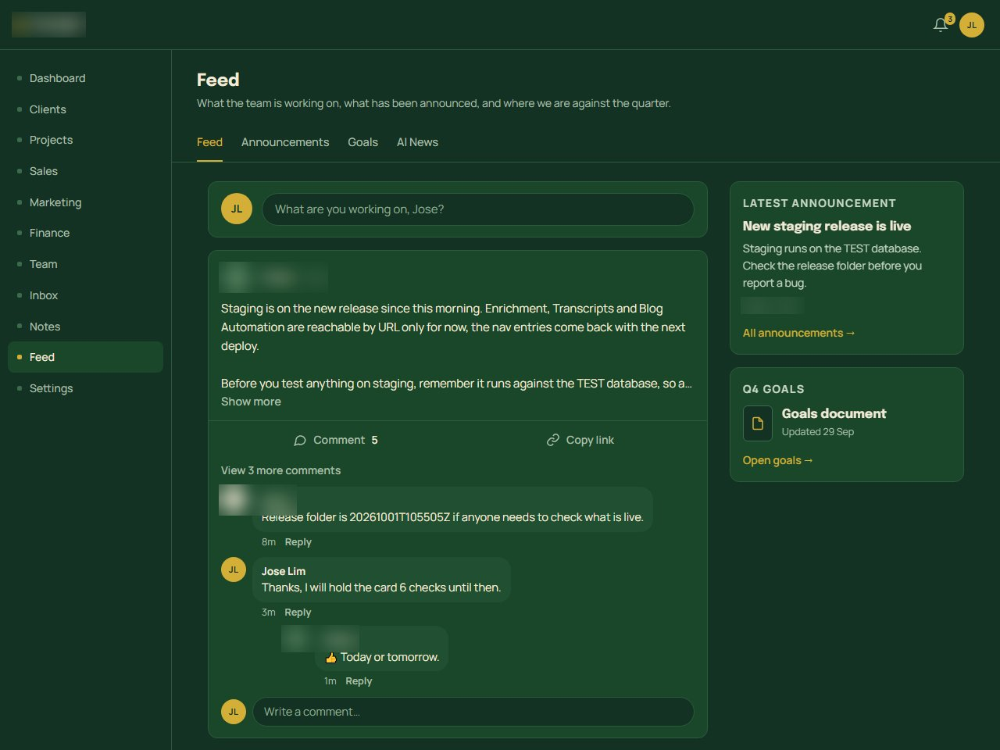

A · Leadflow Consulting
Internal operations platform for a consulting firm

- Problem
- The firm ran sales, marketing, projects, money and team work across separate tools and a demo dashboard that wasn't fit for daily use.
- Approach
- Built modules into a permissioned Next.js and Supabase platform: a sales pipeline with Kanban and forecast, projects, a team feed with @-mentions, contracts and deadlines, tracking, a white-label customization page, a supervisor agent with role rules, approvals and a hard budget cap, a LinkedIn Chrome extension that feeds the CRM, and an automated blog pipeline. Each change was planned, built, reviewed and tested on staging before it was merged.
- Result
- The platform runs the firm's day-to-day work. Highlights: a design clean-up across 251 files in one pass; signed-in pages made 1.5–1.9 s faster by batching repeated permission checks; the supervisor agent passed all 63 acceptance checks on a real-model test run that cost $0.35.